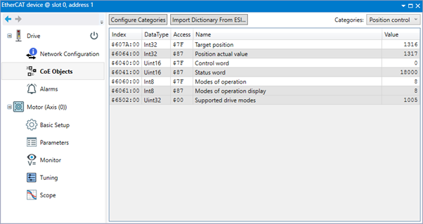
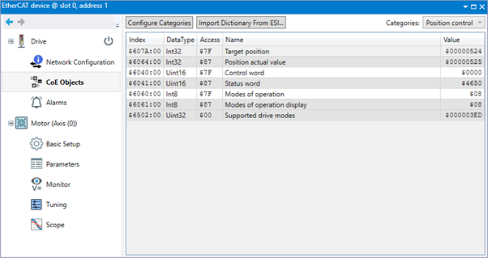
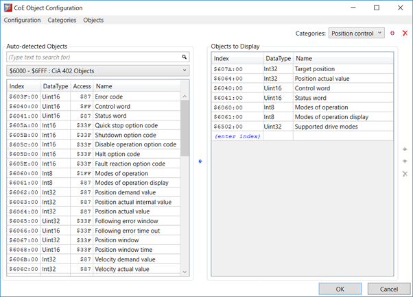
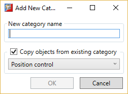

The CoE (CANopen) Objects Tab shows the values of the CANopen objects on the drive (if the drive supports CoE protocol) together with a description of the currently displayed objects.

The CANopen objects are divided into categories in order to make the display more usable. The current category is selected using the drop-down list in the top-right of the dialog.
To configure the Categories, click on the “Configure Categories” button in the top-left of the dialog which will then open the “ CoE Object Configuration ” dialog.
Object values can be displayed as decimal or hexadecimal numbers. Right clicking on any value in the “Value” column will pop up a selector to allow selection/de-selection of hexadecimal notation. All values are displayed using the same notation.

Object values can be edited (unless the object is read-only, in which case it has a grey background) by clicking on the value in the parameter grid end editing it. Pressing “Esc” whilst editing a value will restore the original value.

By default, three categories are configured:
The user can add extra categories as required by clicking in the “Add New Category” icon in the top right of the dialog. This causes the “Add New Category” dialog to be displayed.

Enter a name for the new category then click on “OK” to create it. Optionally the new category can be created containing a copy of the objects in an existing category.
To select the objects in a category: select the category from the “Categories” drop-down list.
Objects are added to the current category by selecting then in the left-hand pane and clicking on the “Add selected objects” icon . The objects displayed in the left-hand panel are filtered using the address range drop-down list. The search box is available to further filter the results. It is also possible to add an object by entering its index number manually.
Objects already in the category can be reordered using the “Move Up” and “Move Down” icons or removed by clicking on the “Remove” icon .